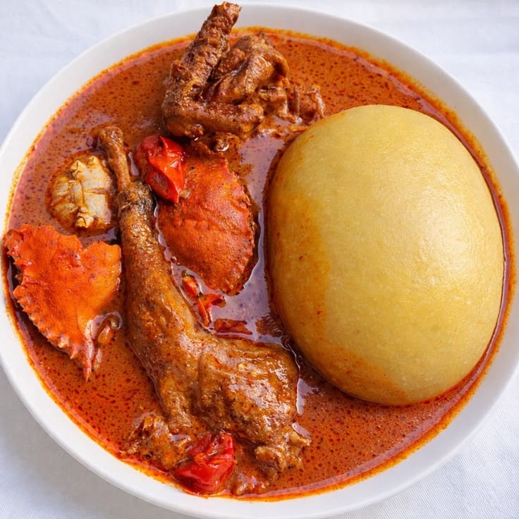

Foutou Igname Sauce Arachide

Description
Un plat traditionnel ouest-africain composé de foutou (pâte à base d'igname pilée) accompagné d'une sauce arachide riche et onctueuse, souvent préparée avec de la viande ou du poisson.
Ingredients
- 2 grosses ignames
- 500g de viande ou de poisson
- 3 cuillères à soupe de pâte d'arachide
- 2 tomates
- 1 oignon
- 2 gousses d'ail
- Piment (selon le goût)
- Sel, cube de bouillon
- Huile
Steps
- Éplucher et cuire les ignames à l'eau jusqu'à ce qu'elles soient tendres.
- Piler les ignames cuites jusqu'à obtenir une pâte lisse et homogène (le foutou).
- Pour la sauce, faire revenir l'oignon et l'ail, ajouter la viande ou le poisson et faire dorer.
- Ajouter les tomates mixées, la pâte d'arachide, le piment et un peu d'eau, laisser mijoter jusqu'à épaississement.
- Servir le foutou avec la sauce arachide chaude.
Home